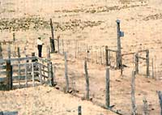

Holistic Recource Management
January/February 1985
If you're watching your livestock pasture turn to desert, there's hope for greener times with...
by Sam Bingham
Most Americans have forgotten that, back before the historic and colorful cattle drives of the late 1800's, our western rangelands stood tall in rich grasses that supported vast herds of bison and other wild ungulates. Today, much of the same land is barren and parched, providing only a marginal living for a scant few sheep and cattle.
It's our own fault, of course: Our ancestors extirpated the bison, fenced in the land, and packed it with herds of cattle and sheep. The cattle and sheep killed the grass by overgrazing, and with the grass went the remaining wildlife and the best of the topsoil-topsoil that had supported abundant plant and animal life for millenia. After a century of such abuse, the land began showing symptoms of desertification: flash floods and erosion, dust and silt, tumbleweed and scrub.
And though many have tried, none have been able to restore native grasslands once they were lost to desertification from overgrazing. Some tried by planting seed, others by burning, bulldozing, or poisoning desert brush. Still others killed off wild game and even their own livestock to reduce grazing pressure on the land. And all failed because they were merely putting Band-Aids on symptoms.
But help may be just across the pasture: Over the past three decades, a totally different approach to arid-country grazing practices-called holistic resource management, or HRM-has been taking shape.
HRM says that if you can identify and put into balance certain critical aspects of nature, the trend toward desertification will be reversed: Grass and livestock production will increase dramatically, and the land will heal itself.
A SYMBIOSIS
Conventional wisdom blames dead grass on big herds and overgrazing, yet fails to explain how millions of large grazing animals evolved and thrived on the very same land for thousands of years without destroying the grass as cattle and sheep have done in just one century.
What it boils down to, says HRM thinking, is that everyone knows that ungulates need grass, but not everyone knows that grass needs ungulates. It does: Minerals and organic nutrients don't recycle properly without the help of large animals that drop dung. Seeds won't germinate or rainwater get absorbed unless the soil is broken up by sharp hooves.
And unbitten grass will simply die of old age. In short, without the impact of grazing herds, the natural balance of plant and animal life is destroyed.
The vast herds of wild bison and their kindred held up their end of the bargain perfectly-they nipped off the tops of their favorite plants, then moved on to graze on greener pastures. The only reason domestic animals don't do the same is that we won't let them.
One of the first to recognize that poor management rather than numbers of animals was the root cause of overgrazing was Allan Savory, who is the leading authority on and chief advocate of holistic resource management in America today.
While working as a wildlife biologist in Zimbabwe (then Southern Rhodesia) in the 1950's, Savory was amazed to discover that the great national parks of Africa supported far greater numbers of large grazing animals than did the professionally managed ranches on adjacent land. While the Rhodesian ranchers watched their best grass species disappear, and called alternately for drought relief and flood control, the parks' natural ecosystems thrived: The springs didn't dry up, the top-soil didn't wash or blow away, and the wild herds prospered.
"Without doubt," Savory reports having reflected at the time, "the great grasslands and the large grazing animals evolved simultaneously. Could there be a symbiotic relationship? The American bison and pronghorn antelope were no different in their grazing habits than the African buffalo. The Great Plains probably supported far more wild animals per acre than any modern rancher would dare carry, and yet wild bison rarely overgrazed. But if the number of animals wasn't the cause of overgrazing, what was?"
A NEW APPROACH TO AN OLD PROBLEM
With those thoughts and questions in mind, Savory teamed up with the Rhodesian ranchers to take a fresh look at the dynamics of overgrazing, paying particular attention to the relationship between grasslands and the animals that lived on them. In the course of their research, they were delighted to discover the book Grass Productivity , by French agricultural researcher Andre Voisin.
Voisin had done the bulk of his research shortly after World War II and was the first to observe that overgrazing isn't caused by too many animals on a given pasture; rather, overgrazing occurs when animals bite off the tops of the same growing plants time and again until the plants die. Voisin further stated that a single cow will overgraze certain favored plants if it is allowed to linger in an area long enough, but even large herds won't overgraze if they move constantly to new ground and don't return until the previously grazed plants have had time to recover.
Today, with nearly 30 years of research, observation, and experience to his credit, Allan Savory is convinced that Voisin was right. Even city folk, he maintains, can see this principle at work: Lawns seldom show the characteristics of overgrazing, even when they're mowed quite short, because people usually don't cut grass until it has regrown to the point where it needs cutting.
But if a rancher puts just a few cows or sheep on a pasture, even a big pasture, the animals will selectively overgraze their favorite plants. Voisin developed a formula for concentrating and moving stock that solved this problem and revolutionized livestock production in Europe and New Zealand. In those areas where Voisin's techniques were put to trial, grass production tripled, and the forest no longer attempted to invade pasture, as it had in the past.
To accomplish this, Voisin used fences to divide large pastures into several smaller pastures, called cells, and shuttled the livestock from cell to cell according to a set formula that allowed the grazed grasses in a particular cell ample time to rejuvenate before the herd returned to graze them again.
But Voisin's formula didn't work in Africa. There, as in the dry American West, domestic stock seemed to push succession backward-from grassland to desert, rather than forward toward forest.
To make Voisin's theories work in the African grasslands, Savory and the ranchers adopted the French researcher's fencing techniques, but had to let go of his fixed stock-rotation formula and manage their resources as Mother Nature intended: They moved their animals from one grazing area to another according to observed growth rates of the grass, rather than by a predetermined and rigid schedule.
The experiment worked, and Savory felt that they had proven his hunch that on fragile grasslands, natural growth processes stagnate without an occasional ground-disturbing trampling by herds of hoofed animals. In fact, Savory found that most ranges suffered more from too much rest than they did from too many grazing animals.
HOLISTIC RESOURCE MANAGEMENT
Holistic resource management offers a Santa's sack of tools and techniques to help get your domestic stock to do for the land what the wild herds once did. A commercial ranch can apply sophisticated refinements that often allow the doubling of stocking rates per acre. Most of these refinements spring from the idea that controlling grazing time-and thus herd impact-is critical.
Once you learn them, many of the techniques of holistic resource management can be put to work almost overnight. And it's not just big-time ranchers who can benefit from HRM. Even if you have only a few head of livestock on a small piece of land, there's an excellent chance that HRM can improve your pasture and your livestock productivity.
If you raise livestock in dry country, begin by studying the growth patterns of your grass. Walk out on your land and mark plants that have just been grazed, then watch to see what happens to them. Check their growth rate periodically and take notice of how soon-and how often-they're rebitten. Are animals selectively chewing their favorite plants to the ground while letting the "weed" species take over? Are they wearing some areas out while letting others grow out of control? If so, you could probably profit from using HRM.
GOOD FENCES MAKE GOOD GRASSLANDS
Obviously, in order for HRM to work, there must be some way to keep your animals where you want them at any given time. Taking the cue from Voisin's pioneering work, commercial ranchers employing HRM regulate the timing and concentration of their stock with fences. But these days, the fences are often electric and frequently strung in a wagon-wheel pattern around central watering and handling facilities.
In fact, the wagon-wheel pattern of fencing has become something of a symbol of HRM... much to Allan Savory's dismay.
"It's a handy technique for concentrating animals and timing their grazing on a commercial ranch," Savory explains, "but too many people build wagon-wheel grazing cells and then ignore the concepts that make such a system work. Illiterate tribal herders have successfully used the concepts of HRM without fences, while elaborately fenced university demonstrations have failed because scientists thought that the fence was the whole idea; they used the fences to make an inflexible rotation system, and ignored the varying growth rates of plants until overgrazing caught up with them."
A CASE IN POINT
Although the academic agricultural community remains largely skeptical, practical experience indicates that, properly used, the HRM idea does work. Take the case of the Barlite Ranch near Marfa, Texas.
In the summer of 1983, the Marfa area was suffering a tenacious drought. Barlite managers Charles and Katie Guest had 1220 head of cattle on 47,000 acres of increasingly brown land. Things were looking so bad that they were ready to spend $40,000 to graze half their stock on irrigated rental pasture... a last-ditch attempt to minimize losses. Many neighboring ranchers were forced to sell stock and use the proceeds to buy hay in order to keep their own operations going.
But a closer inspection of the Barlite land showed that enough perennial forage plants existed to support the herd if each square yard could be induced to grow just a half-ounce of feed. So rather than move part of their stock to irrigated pasture-and since they already had a wagon-wheel fencing arrangement-the Guests opted to give HRM a try.
Normally, the Guests split their herd for grazing in seven wagon-wheel-shaped cells, with each cell further divided into 13 to 16 "paddocks," or smaller enclosures. Each seventh of the herd was rotated through its own set of paddocks. With HRM, the Guests combined their animals into one huge herd, which they rotated through all 101 paddocks, one paddock at a time.
"I didn't think you could run 1,200 cattle together and move them every day," Charles later remarked. "But they were so used to the fences already, they pretty well moved themselves... at least until calves started dropping. That did cause a little extra work; we had to let new mothers lag a few paddocks behind the rest of the herd."
To see how the HRM experiment worked out for the Guests, let's look at the numbers:
Texas grass in drought time may need 60 days or more of rest before it's ready to be grazed again. To schedule this much rest in a single 13- to 16-paddock cell, as the Guests had been doing previously, a small herd had to spend four to five days in each paddock. That's 15 rest days for each day of grazing.
But one large herd rotating through 101 paddocks meant a day or less spent in each paddock, and 100 days' rest.
Finally, during October and November, the Barlite Ranch received a total of 1.5 inches of drizzle. Charles Guest estimated that the precious moisture grew an incredible 21 million pounds of feed on the Barlite's HRM-managed land, allowing him to carry his herd through the winter on half the usual amount of purchased supplements... as well as enabling him to buy 208 cow-calf pairs at distress prices.
And as a bonus, the deer and antelope that used the Barlite pasture also looked better than ever. So did the ranch's bank account, which had been fattened by saving the $40,000 planned for rental pasture and the $26,000 that would have gone for supplemental feed.
ON A SMALLER SCALE. . .
Another HRM convert is Esquipula Chavez, an elderly Indian stockman and governor of Sandia Pueblo, New Mexico. Chavez's problem of trying to make a living running 150 head of poor cattle on poor range was compounded by pressure from the Bureau of Indian Affairs (BIA) to cut the number of animals even further.
Finally, as an alternative to reducing the size of his herd, the BIA helped Chavez build an uncomplicated nine-paddock cell equipped with central handling facilities. Savory helped Chavez work out maximum and minimum grazing periods for each paddock, and Chavez, a close observer of plant life, varies rotation from paddock to paddock according to the growth rate of his grass.
"It works," the Native American rancher says with a smile. "And in addition to improving production, HRM has also reduced my work load. Before, I saw my cows only at handling time, and then it took all my relatives three days of work just to round them up and bring them in. Now I see my animals every day, and can run them through the center and brand or vaccinate the whole herd in one afternoon."
CURES THAT KILL
Typical symptoms of overgrazing in the West include invasions of sagebrush, snake-weed, leafy spurge, piñon pine, and similar nonfood plants. Traditional cures-destocking the range, killing the weeds with defoliants, bulldozing the country flat, planting hybrid grasses, and applying commercial nitrate fertilizer-treat only the symptoms.
As an example of this sort of big-budget thinking, Wyoming is just winding up a six-year, $7.3 million program of spraying Tordon (a commercial variant of Agent Orange) on millions of acres of leafy spurge.
Besides the outright danger of such drastic approaches to grasslands management, leafy spurge isn't even the problem , according to the holistic view. The problem is succession: Where the natural relationship between plants and animals is altered, Mother Nature lets weeds invade.
A typical brush-clearing operation can cost a rancher (or the taxpayers, if it's done on public land leased to a rancher for grazing livestock) $150 an acre, and it's only a short-term fix. In contrast, say HRM practitioners, even the most sophisticated electric-fenced grazing cell can restore the same acre permanently for $5, while simultaneously doubling the allowable stocking rate.
IN THE FINAL RECKONING
We can't really blame our ancestors for ruining the land... they didn't know they were doing it until the harm was done. And we can't blame those who espouse the traditional methods of rangelands management while criticizing HRM, even though the old ways haven't worked and HRM promises to; resistance to change often helps weed out fly-by-night schemes that could send us off on wild, wasteful tangents.
But many feel that Allan Savory is right, that the time for change has come, and that HRM holds the key to a more naturally balanced, productive ranching future.
|
Allan Savory, America's chief proponent of holistic resource management, examines the results of overrested rangeland near Albuquerque, New Mexico ? dead grass and weakened browse, both due to poor water cycling. |
A cluster of grass showing typical symptoms of overgrazing?a dead center, with deformed blades lying flat against the ground. |
Fence line dividing the Barlite Ranch (Texas) on the left and a neighboring ranch on the right. Even with a cattle-stocking rate of more than double its neighbor, the Barlite produces more and superior graze, thanks to HRM. |
|
 Esquipula Chavez, governor of Sandia Pueblo, New Mexico, near the center of his nine- paddock cell. The corridor around the cell keeps cattle from loitering near the water troughs. Separating pens and loading facilities are located within the corridor. |
 With HRM, the stock is concentrated in one area at a time. When the animals return to where they started, fresh grass is waiting. Twelve or thirteen days in each section will give the land 90 days' rest between grazings. Four or five days will give the land 30 days' rest. |
|